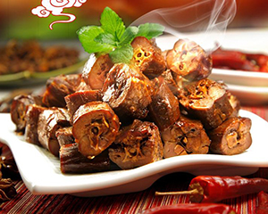
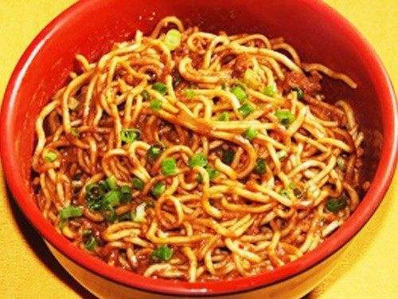

通信1903 201916180316 赵子龙
自我介绍
我的名字是赵子龙，我来自湖北武汉，我的微信是：
这是我和我的好朋友的照片:
家乡美食
1.周黑鸭
周黑鸭是武汉卤菜的连锁店，这个连锁店已经开遍全国哦，这里的卤鸭脖吃起来麻辣鲜香，让人欲罢不能。
2.热干面
热干面是武汉人过早的首选小吃，香喷喷的芝麻酱淋上干面上，无论去到哪，这好吃的味道永远忘不掉。
3.三鲜豆皮
三鲜豆皮是武汉人“过早”的另一种主要食品，也是武汉民间的一种传统小吃。豆皮制作过程中要求“皮薄、浆清、火功正”，这样煎出的豆皮外脆内软、油而不腻。煎好后油光闪亮，色黄味香。以“老通城”三鲜豆皮最为出名。